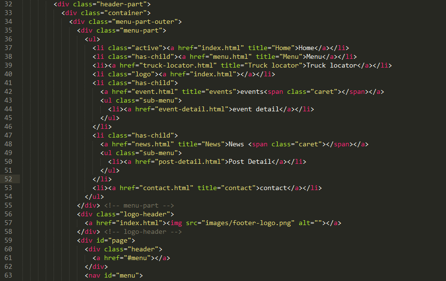
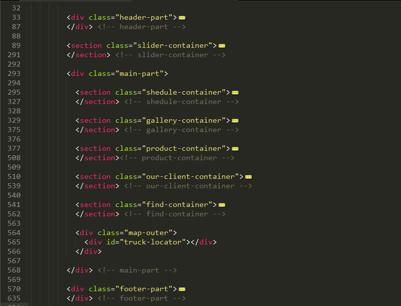
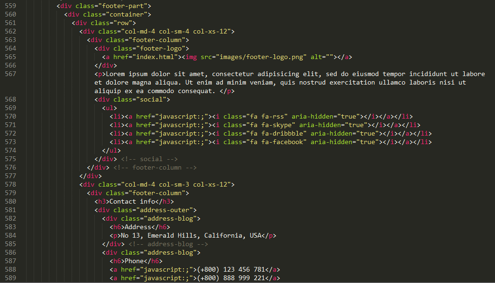
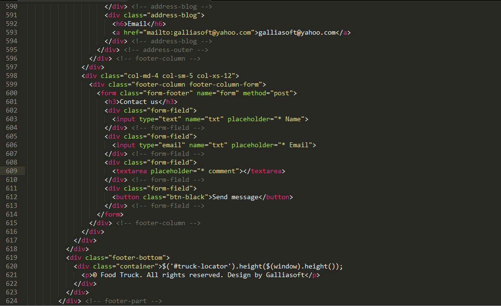

Created: 23/07/2019
By: Madlene
Email: support@madlenedesign.com
Thank you for purchasing our HTML Template. If you have any questions that are beyond the scope of this help file, please feel free to email via my user page contact form here. Thanks so much!
This theme is a fixed layout with two columns. All of the information within the main content area is nested within a div with an id of "main". The sidebar's (column #2) content is within a div with a class of "aside". The general template structure is the same throughout the template. Here is the general structure.
   I'm using two CSS files in this theme. The first one is a color css file. It changes the color of the theme at once. Keep in mind, that these values might be overridden somewhere else in the file.
The second file contains all of the specific stylings for the page. The file is separated into sections using:
/* header styles */ /* nav area styles */ /* main container styles */ /* main styles */ /* footer styles */
If you would like to edit a specific section of the site, simply find the appropriate label in the CSS file, and then scroll down until you find the appropriate style that needs to be edited.
This theme imports five Javascript files with their respective styling files are in Css folder.
I've used the following icons.
Once again, thank you so much for purchasing this theme. As I said at the beginning, I'd be glad to help you if you have any questions relating to this theme. No guarantees, but I'll do my best to assist. If you have a more general question relating to the themes on ThemeForest, you might consider visiting the forums and asking your question in the "Item Discussion" section.
Madlene - www.madlenedesign.com